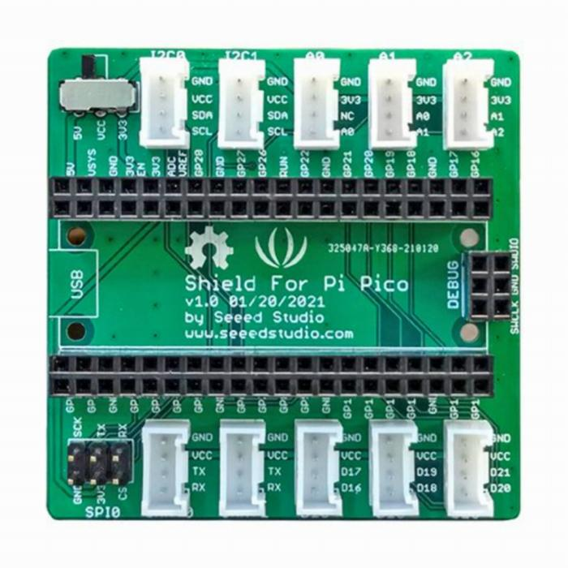
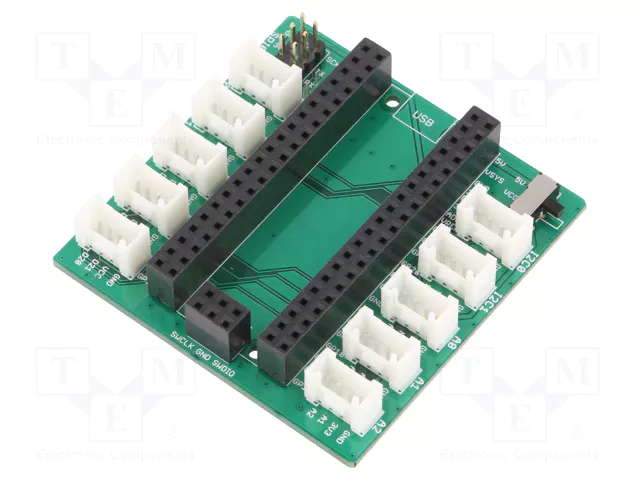
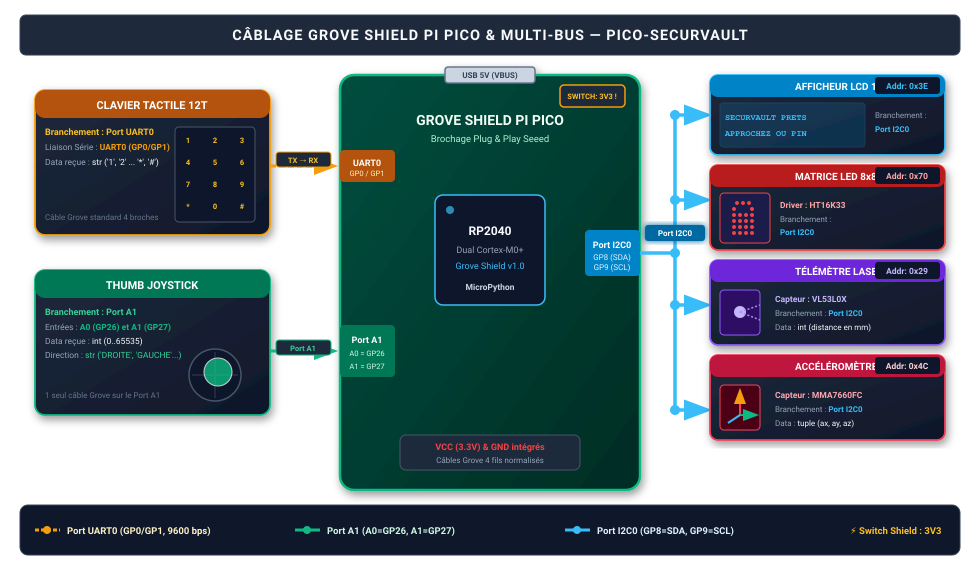

str, int, tuple).vl53l0x.py et mma7660.py) sur la mémoire flash du Pico.Pour interconnecter vos capteurs et actionneurs rapidement et sans erreur de câblage sur breadboard, nous utilisons le Grove Shield for Pi Pico v1.0 de Seeed Studio.


5V / 3V3).3V3 avant toute mise sous tension !

En observant attentivement les sérigraphies du shield et les fiches wikis des composants, complétez les informations nécessaires au raccordement et à la configuration.
Associez chaque module Grove au bon connecteur sur le shield :
| Module Grove | Type de signal / Bus | Port sur le Grove Shield | Broches Pico (RP2040) associées |
|---|---|---|---|
| Clavier Tactile 12 touches | Liaison Série Asynchrone | Port UART0 |
GP0 (TX) et GP1 (RX) |
| Thumb Joystick 2 axes | 2 Tensions Analogiques (X et Y) | Port A1 |
GP26 (A0=Axe X) et GP27 (A1=Axe Y) |
| Afficheur LCD 16x2 | Bus I2C | Port I2C0 |
GP8 (SDA) et GP9 (SCL) |
| Matrice LED 8x8 | Bus I2C | Port I2C0 (via Hub I2C) |
GP8 (SDA) et GP9 (SCL) |
| Télémètre Laser ToF (VL53L0X) | Bus I2C | Port I2C0 (via Hub I2C) |
GP8 (SDA) et GP9 (SCL) |
| Accéléromètre 3 Axes (MMA7660) | Bus I2C | Port I2C0 (via Hub I2C) |
GP8 (SDA) et GP9 (SCL) |
I2C0 (GP8/GP9).
Utilisez un petit module Grove I2C Hub (duplicateur 4 ports) relié au connecteur I2C0 du shield.
Consultez les pages documentaires officielles Seeed Studio fournies et relevez l'adresse matérielle hexadécimale de chaque composant I2C. Vous en aurez besoin pour renseigner les codes exemples !
Pour chaque composant, vous disposez d'un code exemple prêt à tester.
Votre mission consiste à :
1. Compléter l'adresse I2C (repérée par 0x__).
2. Exécuter le script et observer dans la console Thonny les messages affichés ainsi que le type des données retournées.
Ce composant est branché sur le port UART0 (GP0 TX / GP1 RX).
Téléversez et lancez ce script :
from machine import UART, Pin
import time
# Port UART0 du Grove Shield : TX sur GP0, RX sur GP1 à 9600 bauds
uart_clavier = UART(0, baudrate=9600, tx=Pin(0), rx=Pin(1))
# Table de conversion des octets reçus en caractères
MAP_TOUCHES = {
0xE1: '1', 0xE2: '2', 0xE3: '3',
0xE4: '4', 0xE5: '5', 0xE6: '6',
0xE7: '7', 0xE8: '8', 0xE9: '9',
0xEA: '*', 0xEB: '0', 0xEC: '#'
}
def lire_touche_clavier():
if uart_clavier.any():
octet_recu = uart_clavier.read(1)[0]
return MAP_TOUCHES.get(octet_recu, None)
return None
print("Touchez les touches du clavier tactile...")
while True:
touche = lire_touche_clavier()
if touche:
# AFFICHAGE DU MESSAGE ET DU TYPE DE DONNÉE REÇUE
print(f"Touche pressée : '{touche}' | Type de donnée : {type(touche)}")
time.sleep_ms(50)
touche (int, str, float, bool) ? Relevez la ligne exacte affichée dans la console lors de l'appui sur '5' et '#' :
Le joystick est relié au port A1 du shield. Il fournit deux grandeurs analogiques lues par l'ADC du Pico sur GP26 et GP27.
from machine import ADC, Pin
import time
joy_x = ADC(Pin(26)) # Broche A0 du port A1
joy_y = ADC(Pin(27)) # Broche A1 du port A1
def lire_direction_joystick():
val_x = joy_x.read_u16()
val_y = joy_y.read_u16()
if val_x > 52000:
direction = "DROITE"
elif val_x < 14000:
direction = "GAUCHE"
elif val_y > 52000:
direction = "HAUT"
elif val_y < 14000:
direction = "BAS"
else:
direction = "CENTRE"
return val_x, val_y, direction
while True:
x, y, dir_texte = lire_direction_joystick()
# AFFICHAGE DES MESURES, DE LA DIRECTION ET DE LEURS TYPES
print(f"X={x} ({type(x)}) | Y={y} | Direction : '{dir_texte}' ({type(dir_texte)})")
time.sleep_ms(300)
x et y ? Quel est le type de donnée de dir_texte ? Que vaut la mesure quand le joystick est au repos ?
Complétez l'adresse ADDR_LCD avec la valeur trouvée en Partie 1 (0x__) puis testez l'affichage :
from machine import I2C, Pin
import time
i2c = I2C(0, sda=Pin(8), scl=Pin(9), freq=100000)
# TODO : Renseignez l'adresse I2C du LCD trouvée dans la doc Seeed
ADDR_LCD = 0x__ # <--- À COMPLÉTER (ex: 0x3E)
def lcd_commande(cmd):
i2c.writeto(ADDR_LCD, bytes([0x80, cmd]))
def lcd_init():
time.sleep_ms(50)
lcd_commande(0x28) # 2 lignes 5x8
lcd_commande(0x0C) # Affichage ON, curseur OFF
lcd_commande(0x01) # Effacer
time.sleep_ms(2)
lcd_commande(0x06)
def lcd_effacer():
lcd_commande(0x01)
time.sleep_ms(2)
def lcd_afficher_texte(texte, ligne=0, colonne=0):
adresse_ram = 0x80 + (0x40 * ligne) + colonne
lcd_commande(adresse_ram)
for car in texte:
i2c.writeto(ADDR_LCD, bytes([0x40, ord(car)]))
lcd_init()
lcd_afficher_texte("BTS CIEL - 1ERE ", ligne=0, colonne=0)
lcd_afficher_texte("SECURVAULT OK ! ", ligne=1, colonne=0)
print("Message envoyé sur le LCD avec succès !")
Hex et copiez les 8 octets directement dans la liste Python ci-dessous !
Complétez l'adresse ADDR_MATRICE = 0x__ et testez l'affichage du cadenas :
# TODO : Renseignez l'adresse I2C de la matrice trouvée dans la doc (ex: 0x70)
ADDR_MATRICE = 0x__
# Motif 8x8 généré sur https://xantorohara.github.io/led-matrix-editor/
ICONE_CADENAS_FERME = [
0x18, 0x24, 0x24, 0x7E, 0x7E, 0x7E, 0x7E, 0x00
]
def matrice_init():
i2c.writeto(ADDR_MATRICE, bytes([0x21])) # Oscillateur interne activé
i2c.writeto(ADDR_MATRICE, bytes([0x81])) # Affichage allumé
i2c.writeto(ADDR_MATRICE, bytes([0xEF])) # Luminosité max
def matrice_afficher(motif):
tampon = bytearray(17)
tampon[0] = 0x00
for i in range(8):
tampon[1 + i * 2] = motif[i]
tampon[2 + i * 2] = 0x00
i2c.writeto(ADDR_MATRICE, tampon)
matrice_init()
matrice_afficher(ICONE_CADENAS_FERME)
print("Cadenas affiché sur la matrice 8x8 !")
vl53l0x.py (Port I2C0)
Enregistrez sur le Pico le fichier fourni [vl53l0x.py](file:///c:/Users/Lycee/Documents/GitHub/cours_bts_ciel1/vl53l0x.py).
Renseignez son adresse I2C et lancez la mesure :
from vl53l0x import VL53L0X
import time
# TODO : Complétez l'adresse I2C du VL53L0X (ex: 0x29)
ADDR_TOF = 0x__
capteur_tof = VL53L0X(i2c, address=ADDR_TOF)
while True:
distance_mm = capteur_tof.ping()
print(f"Distance mesurée : {distance_mm} mm | Type : {type(distance_mm)}")
if distance_mm < 300:
print(" --> Approche détectée (< 30 cm) !")
time.sleep_ms(200)
mma7660.py (Port I2C0)
Enregistrez sur le Pico le fichier fourni [mma7660.py](file:///c:/Users/Lycee/Documents/GitHub/cours_bts_ciel1/mma7660.py).
Renseignez son adresse I2C et observez la détection de secousse :
from mma7660 import MMA7660
import time
# TODO : Complétez l'adresse I2C du MMA7660 (ex: 0x4C)
ADDR_ACCEL = 0x__
accel = MMA7660(i2c, address=ADDR_ACCEL)
while True:
ax, ay, az = accel.get_xyz()
choc = accel.est_secoue(seuil_delta=0.35)
if choc:
print(f"[ALERTE] Secousse détectée ! (Choc={choc}, Type={type(choc)})")
else:
print(f"Accélérations stables : X={ax:.2f}, Y={ay:.2f}, Z={az:.2f}")
time.sleep_ms(250)
Maintenant que chaque brique matérielle est validée, nous assemblons le programme global du coffre-fort PICO-SECURVAULT. Comme vu au TP 3, le microcontrôleur exécute une Machine à États Finis limpide : un état actif à la fois, aucune boucle bloquante.
+---------------------------------------------------------+
| |
v |
[ETAT_VEILLE] (0) |
/ \ |
(Approche ToF < 300mm) (Touche Clavier) |
\ / |
v v |
[ETAT_SAISIE_PIN] (1) <---+ (Chiffre '0'-'9' ou '*') |
| | |
(Touche '#')---------+ |
v |
[ETAT_VERIF_PIN] (2) |
/ \ |
(Code Correct)/ \(Code Faux < 3) |
v v |
[ETAT_MENU_ACTIF] (3) (Affichage Erreur) ----------------------------------+
/ \ |
(Joystick/ \(Joystick |(3e Échec consécutif)
DROITE) GAUCHE) v
v v [ETAT_VERROUILLAGE_TEMP] (5)
[ETAT_OUVERTURE] (4) | (Alarme & Blocage 10s non-bloquant)
| | |
| (Délai 5s) | | (Délai 10s écoulé)
+----------------+----------+
===> SURVEILLANCE GLOBALE :
Si accel.est_secoue() == True ====> [ETAT_ALARME_SABOTAGE] (6) (Clignotement 5s)
Ouvrez votre fichier principal sous Thonny.
Insérez les fonctions pilotes validées en Partie 2 et complétez les blocs d'état repérés par # TODO :
from machine import I2C, Pin, UART, ADC
import time
from vl53l0x import VL53L0X
from mma7660 import MMA7660
# --- INITIALISATIONS SHIELD & BUS ---
i2c = I2C(0, sda=Pin(8), scl=Pin(9), freq=100000)
uart_clavier = UART(0, baudrate=9600, tx=Pin(0), rx=Pin(1))
joy_x = ADC(Pin(26))
joy_y = ADC(Pin(27))
# Instanciation capteurs avec leurs adresses
capteur_tof = VL53L0X(i2c, address=0x29)
accel = MMA7660(i2c, address=0x4C)
# --- ÉTATS DU SYSTÈME ---
ETAT_VEILLE = 0
ETAT_SAISIE_PIN = 1
ETAT_VERIF_PIN = 2
ETAT_MENU_ACTIF = 3
ETAT_OUVERTURE = 4
ETAT_VERROUILLAGE_TEMP = 5
ETAT_ALARME_SABOTAGE = 6
# --- VARIABLES D'ÉTAT ---
CODE_SECRET_MAITRE = "1234"
code_en_cours = ""
nb_erreurs = 0
etat_courant = ETAT_VEILLE
t_debut_etat = 0
# (Insérer ici les fonctions lcd_*, matrice_*, lire_touche_clavier, lire_direction_joystick)
lcd_init()
matrice_init()
print("=== PICO-SECURVAULT OPERATIONNEL ===")
while True:
# ------------------------------------------------------------------
# SURVEILLANCE DU SABOTAGE PHYSIQUE (ACCÉLÉROMÈTRE)
# ------------------------------------------------------------------
if etat_courant != ETAT_ALARME_SABOTAGE and accel.est_secoue(seuil_delta=0.4):
print("[ALERTE] Sabotage détecté !")
t_debut_etat = time.ticks_ms()
lcd_effacer()
lcd_afficher_texte("ALERTE SABOTAGE!", 0, 0)
lcd_afficher_texte("CHOC DETECTE ! ", 1, 0)
matrice_afficher(ICONES["ERREUR_X"])
etat_courant = ETAT_ALARME_SABOTAGE
# ------------------------------------------------------------------
# ÉTAT 0 : VEILLE AVEC RÉVEIL OPTIQUE ToF
# ------------------------------------------------------------------
elif etat_courant == ETAT_VEILLE:
matrice_afficher(ICONES["CADENAS_FERME"])
lcd_afficher_texte("SECURVAULT PRETS", 0, 0)
lcd_afficher_texte("APPROCHEZ OU PIN", 1, 0)
dist = capteur_tof.ping()
touche = lire_touche_clavier()
if (dist < 300) or (touche and touche.isdigit()):
code_en_cours = touche if (touche and touche.isdigit()) else ""
lcd_effacer()
lcd_afficher_texte("CODE PIN : ", 0, 0)
etoiles = "*" * len(code_en_cours)
lcd_afficher_texte(etoiles + " " * (16 - len(etoiles)), 1, 0)
etat_courant = ETAT_SAISIE_PIN
# ------------------------------------------------------------------
# ÉTAT 1 : SAISIE EN COURS DU CODE PIN (UART)
# ------------------------------------------------------------------
elif etat_courant == ETAT_SAISIE_PIN:
touche = lire_touche_clavier()
if touche:
if touche.isdigit() and len(code_en_cours) < 8:
code_en_cours += touche
etoiles = "*" * len(code_en_cours)
lcd_afficher_texte(etoiles + " " * (16 - len(etoiles)), 1, 0)
elif touche == '*':
code_en_cours = code_en_cours[:-1]
etoiles = "*" * len(code_en_cours)
lcd_afficher_texte(etoiles + " " * (16 - len(etoiles)), 1, 0)
if len(code_en_cours) == 0:
etat_courant = ETAT_VEILLE
elif touche == '#':
etat_courant = ETAT_VERIF_PIN
# ------------------------------------------------------------------
# ÉTAT 2 : VÉRIFICATION DU CODE PIN (À COMPLÉTER)
# ------------------------------------------------------------------
elif etat_courant == ETAT_VERIF_PIN:
# TODO : Comparer code_en_cours avec CODE_SECRET_MAITRE
# - Si OUI : réinitialiser nb_erreurs, afficher ETOILE, passer à ETAT_MENU_ACTIF
# - Si NON : incrémenter nb_erreurs, afficher ERREUR_X
# Si nb_erreurs >= 3 -> t_debut_etat = time.ticks_ms() -> ETAT_VERROUILLAGE_TEMP
# Sinon -> retour ETAT_VEILLE
pass
# ------------------------------------------------------------------
# ÉTAT 3 : MENU JOYSTICK ACTIF (À COMPLÉTER)
# ------------------------------------------------------------------
elif etat_courant == ETAT_MENU_ACTIF:
# TODO : Lire la direction du joystick
# - Si "DROITE" : t_debut_etat = time.ticks_ms() -> passer à ETAT_OUVERTURE
# - Si "GAUCHE" : re-verrouiller -> retour ETAT_VEILLE
pass
# ------------------------------------------------------------------
# ÉTAT 4 : OUVERTURE SAS (À COMPLÉTER)
# ------------------------------------------------------------------
elif etat_courant == ETAT_OUVERTURE:
# TODO : Afficher CADENAS_OUVERT sur la matrice
# TODO : Afficher "SAS DEVERROUILLE" et la distance porte lue par le ToF
# TODO : Si time.ticks_diff(time.ticks_ms(), t_debut_etat) >= 5000 -> retour ETAT_VEILLE
pass
# ------------------------------------------------------------------
# ÉTAT 5 : VERROUILLAGE ANTI-INTRUSION 10 SECONDES (À COMPLÉTER)
# ------------------------------------------------------------------
elif etat_courant == ETAT_VERROUILLAGE_TEMP:
# TODO : Décompte en secondes réelles sur le LCD
# TODO : Clignotement de la croix ERREUR_X toutes les 300 ms
# TODO : Fin des 10 secondes -> nb_erreurs = 0 -> retour ETAT_VEILLE
pass
# ------------------------------------------------------------------
# ÉTAT 6 : ALARME SABOTAGE PHYSIQUE (À COMPLÉTER)
# ------------------------------------------------------------------
elif etat_courant == ETAT_ALARME_SABOTAGE:
# TODO : Maintenir l'alarme pendant 5 secondes
# TODO : Dès que time.ticks_diff(time.ticks_ms(), t_debut_etat) >= 5000 -> retour ETAT_VEILLE
pass
time.sleep_ms(15)
| Compétence & Critère | Indicateurs de réussite | Barème | Note |
|---|---|---|---|
| 1. Câblage Grove Shield & Adresses I2C |
Vérification du switch 3V3, câbles branchés aux bons ports (UART0, A1, I2C0), exactitude des 4 adresses I2C (0x3E, 0x70, 0x29, 0x4C).
|
4 pts | |
| 2. Validation Unitaire & Types de Données |
Exécution des 6 codes exemples, affichage des messages reçus et identification correcte des types de données (str pour le clavier, int/str pour le joystick).
|
5 pts | |
| 3. Machine à États Finis (FSM) | Complétion des états 2 à 6, structure sans blocage spaghetti, réveil optique ToF fonctionnel, détection de sabotage prioritaire. | 6 pts | |
| 4. Gestion Temporelle Non-Bloquante |
Décompte de sécurité de 10s et temporisation d'ouverture gérés avec time.ticks_ms() et time.ticks_diff() sans figer le système.
|
3 pts | |
| 5. Qualité, Rigueur & Autonomie | Nommage explicite, modularité, commentaires techniques, prise d'initiative (défis bonus). | 2 pts | |
| TOTAL : | / 20 | ||